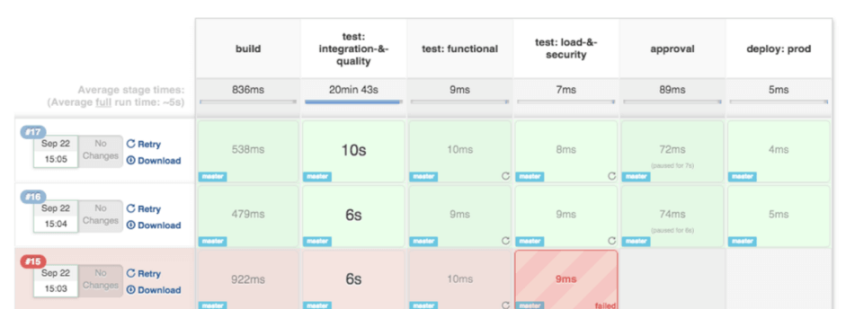
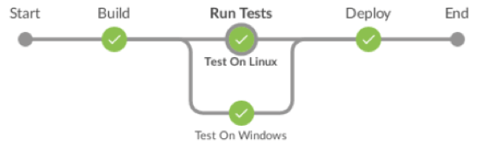

如何使用 Jenkins 声明式流水线

Jenkins 为您提供了两种开发流水线代码的方式：脚本式和声明式。
脚本式流水线（也称为“传统”流水线）基于 Groovy 作为其特定于域的语言。 而声明式流水线提供了简化且更友好的语法，并带有用于定义它们的特定语句，而无需学习 Groovy。
Jenkins 的流水线插件版本2.5引入了对声明式流水线的支持。
在本文中，我们将介绍开发声明式流水线脚本的所有可用指令，这将清楚地说明其功能。
声明式流水线语法
必须使用 pipeline 语句定义有效的声明式流水线，并包括以下必需的部分：
- agent
- stages
- stage
- steps
另外，还有这些可用的指令：
- environment (在流水线或阶段级别定义)
- input (阶段级别定义)
- options (在流水线或阶段级别定义)
- parallel
- parameters
- post
- script
- tools
- triggers
- when
现在，我们将从所需的指令/部分开始，对列出的每个指令/部分进行描述。
agent
Jenkins 通过将分布式构建委托给“代理/agent”节点来提供执行分布式构建的能力。 这样做可以使您仅使用 Jenkins 服务器的一个实例来执行多个项目，而工作负载却被分配给了它的代理。 有关如何配置主/代理模式的详细信息超出了本博客的范围。请参阅 Jenkins 分布式构建以获取更多信息。
代理应标记上标签，以便彼此轻松识别。 例如，节点可以通过其平台（Linux，Windows 等），其版本或位置等来标记。 “agent”部分配置流水线可以在哪些节点上运行。
指定 agent any 意味着 Jenkins 将在任何可用节点上运行任务。
其用法的一个示例可以是：
pipeline {
agent any
...
}
stages
本部分允许在流水线上生成不同的阶段，这些阶段将在运行任务时显示为不同的段。
一个包含阶段语句的示例流水线：
pipeline {
agent any
stages {
...
}
}
stage
必须在“stages”部分上定义至少一个“stage”部分。 它将包含流水线将执行的工作。 阶段必须命名，因为 Jenkins 将在界面上显示每个阶段，如下所示：

Jenkins 根据定义的阶段以图形方式拆分流水线执行，并显示它们的持续时间以及是否成功。
上一个图像的流水线脚本如下所示：
pipeline {
agent any
stages {
stage ('build') {
...
}
stage ('test: integration-&-quality') {
...
}
stage ('test: functional') {
...
}
stage ('test: load-&-security') {
...
}
stage ('approval') {
...
}
stage ('deploy:prod') {
...
}
}
}
steps
最后一个必需的部分是“steps”，它被定义为在“stage”内。 在“steps”部分中必须至少定义一个步骤。
对于 Linux 和 MacOS，支持使用 shell。 这是一个例子：
steps {
sh 'echo "A one line step"'
sh '''
echo "A multiline step"'
cd /tests/results
ls -lrt
'''
}
对于 Windows，可以使用 bat 或 PowerShell，如下所示：
steps {
bat "mvn clean test -Dsuite=SMOKE_TEST -Denvironment=QA"
powershell ".\funcional_tests.ps1"
}
其他非必需的指令将在以下段落中说明。
environment
可以在阶段或流水线级别定义此指令，这将决定其定义的范围。在“pipeline”级别使用“environment”时，其定义将对所有流水线步骤均有效。 相反，如果它是在“stage”中定义的，则它仅对特定阶段有效。
该指令的示例用法：
在“pipeline”级别：
pipeline {
agent any
environment {
OUTPUT_PATH = './outputs/'
}
stages {
stage ('build') {
...
}
...
}
}
在”stage”级别：
pipeline {
agent any
stages {
stage ('build') {
environment {
OUTPUT_PATH = './outputs/'
}
...
}
...
}
}
input
“input”指令在阶段级别定义，提供提示输入的功能。该阶段将被暂停，直到用户手动确认为止。
以下配置选项可用于此指令：
- message：这是必需的选项，其中指定了要显示给用户的消息。
- id：可选标识符。 默认情况下，使用“阶段”名称。
- ok：“确定”按钮的可选文本。
- submitter：允许提交输入的用户或外部组名的可选列表。 默认情况下，允许任何用户。
- submitterParameter：要使用提交者名称设置的环境变量的可选名称（如果存在）。
- parameters：提交者将提供的可选参数列表。
这是包含此指令的示例流水线：
pipeline {
agent any
stages {
stage ('build') {
input{
message "Press Ok to continue"
submitter "user1,user2"
parameters {
string(name:'username', defaultValue: 'user', description: 'Username of the user pressing Ok')
}
}
steps {
echo "User: ${username} said Ok."
}
}
}
}
options
在流水线级别定义，此指令将对整个流水线的特定选项进行分组。可用的选项有：
- buildDiscarder
- disableConcurrentBuilds
- overrideIndexTriggers
- skipDefaultCheckout
- skipStagesAfterUnstable
- checkoutToSubdirectory
- newContainerPerStage
- timeout
- retry
- timestamps
请参阅 Jenkins 声明式流水线选项，以获取有关此内容的完整参考。
例如，您可以通过以下操作将流水线配置为在失败前重试3次：
pipeline {
agent any
options {
retry(3)
}
stages {
echo 'do something'
}
}
parallel
Jenkins 流水线阶段可以在内部嵌套其他阶段，这些阶段将并行执行。
这是通过在脚本中添加“parallel”指令来完成的。 使用示例：
stage('run-parallel-branches') {
steps {
parallel(
a: {
echo "Tests on Linux"
},
b: {
echo "Tests on Windows"
}
)
}
}
从声明式流水线1.2版开始，引入了一种新语法，使并行语法的使用更像声明式的。
使用此新语法重写的先前脚本如下所示：
pipeline {
agent none
stages {
stage('Run Tests') {
parallel {
stage('Test On Windows') {
agent {
label "windows"
}
steps {
bat "run-tests.bat"
}
}
stage('Test On Linux') {
agent {
label "linux"
}
steps {
sh "run-tests.sh"
}
}
}
}
}
}
上述的任何一个流水线都将如下所示：

由于两个脚本都运行特定的平台测试，因此它们将在不同的节点上运行测试。 如果您的 Jenkins 服务器具有足够的 CPU，则还可以通过使用多线程将并行用于在同一节点上同时运行阶段。
使用并行阶段时有一些限制：
- stage 指令可以具有 parallel 指令或 steps 指令，但不能同时具有两者。
- parallel 指令中的一个 stage 指令不能嵌套另一个 parallel 指令，仅允许 steps。
- 在内部具有 parallel 指令的 stage 指令不能定义“agent”或“tools”指令。
parameters
该指令允许您定义脚本中要使用的参数列表。一旦触发流水线，应提供参数。应该在“pipeline”级别定义它，并且整个流水线只允许一个指令。
字符串和布尔值是可以使用的有效参数类型。
pipeline {
agent any
parameters {
string(name: 'user', defaultValue: 'John', description: 'A user that triggers the pipeline')
}
stages {
stage('Trigger pipeline') {
steps {
echo "Pipeline triggered by ${params.USER}"
}
}
}
}
post
可以在流水线级别或每个阶段上添加 post，一旦阶段或流水线完成，便会执行其中包含的语句。可以使用几个 post 条件来控制是否执行该 post：
- always：无论完成状态如何，都会执行步骤。
- changed：仅当完成结果与上次运行的状态不同时才执行。
- fixed：仅在完成结果是成功且上次运行失败时执行
- regression：仅在当前执行失败，中止或不稳定并且上一次运行成功时执行。
- aborted：仅在流水线或阶段中止时才执行步骤。
- failure：仅在流水线或阶段失败时才执行步骤。
- success：仅在流水线或阶段成功时才执行步骤。
- unstable：仅当流水线或阶段不稳定时才执行步骤。
由于流水线 post 包含的句子将在脚本的末尾运行，因此可以在此处执行清除任务或通知等。
pipeline {
agent any
stages {
stage('Some steps') {
steps {
echo 'do something'
}
}
}
post {
always {
echo "Pipeline finished"
bat './performCleanUp.bat'
}
}
}
script
此步骤用于将脚本化流水线语句添加到声明式流水线中，从而提供更多功能。此步骤必须包括在“stage”级别。
脚本块可以多次用于不同的项目。这些块使您可以扩展 Jenkins 功能，并可以实现为共享库。可以在 Jenkins 共享库中找到有关此内容的更多信息。 同样，可以将共享库导入并使用到“script”中，从而扩展了流水线功能。
接下来，我们将提供示例流水线。第一个只有一个包含一段脚本化流水线代码的块，而第二个将展示如何导入和使用共享库：
pipeline {
agent any
stages {
stage('Sample') {
steps {
echo "Scripted block"
script {
}
}
}
}
}
有关此主题的更多信息，请参阅如何使用 Jenkins 脚本式流水线的文章。
tools
可以在流水线级别或阶段级别添加“tools”指令。 它允许您指定要在脚本上使用的 Maven，JDK 或 Gradle 版本。 必须在“全局工具配置” Jenkins 菜单上配置这些工具中的任何一个，在撰写本文时，这三个工具都受支持。
另外，Jenkins 将尝试安装列出的工具（如果尚未安装）。通过使用此指令，可以确保安装了项目所需的特定版本。
pipeline {
agent any
tools {
maven 'apache-maven-3.0.1'
}
stages {
echo 'do something'
}
}
triggers
触发器允许 Jenkins 通过使用以下任何一个可用的方式自动触发流水线：
- cron：通过使用 cron 语法，它可以定义何时重新触发流水线。
- pollSCM：通过使用 cron 语法，它允许您定义 Jenkins 何时检查新的源存储库更新。如果检测到更改，则将重新触发流水线。（从 Jenkins 2.22 开始可用）。
- upstream：将 Jenkins 任务和阈值条件作为输入。 当列表中的任何任务符合阈值条件时，将触发流水线。
带有可用触发器的示例流水线如下所示：
pipeline {
agent any
triggers {
//Execute weekdays every four hours starting at minute 0
cron('0 */4 * * 1-5')
}
stages {
...
}
}
pipeline {
agent any
triggers {
//Query repository weekdays every four hours starting at minute 0
pollSCM('0 */4 * * 1-5')
}
stages {
...
}
}
pipeline {
agent any
triggers {
//Execute when either job1 or job2 are successful
upstream(upstreamProjects: 'job1, job2', threshold: hudson.model.Result.SUCCESS)
}
stages {
...
}
}
when
可以根据“when”指令中定义的条件执行流水线步骤。如果条件匹配，将运行相应阶段中定义的步骤。它应该在阶段级别定义。
有关条件及其说明的完整列表，请参阅 Jenkins 声明式流水线“when”指令。
例如，流水线使您可以在具有多个分支的项目上执行任务。这被称为多分支流水线，其中可以根据分支名称（例如“master”，“ feature*”，“development”等）采取特定的操作。 这是一个示例流水线，它将运行 master 分支的步骤：
pipeline {
agent any
stages {
stage('Deploy stage') {
when {
branch 'master'
}
steps {
echo 'Deploy master to stage'
}
}
}
}
最后2个 Jenkins 声明式流水线提示
声明式流水线语法错误在脚本开始时报告。 这是一个很好的功能，因为您不会浪费时间，直到某个步骤未能意识到拼写错误或拼写错误。
如前所述，流水线可以以声明式或脚本式编写。而且，声明式方法建立在脚本式方法的基础之上，通过添加”script”步骤，可以很容易地进行扩展。
Jenkins 流水线已在 CI/CD 环境中广泛使用。不管是使用声明式或脚本式流水线都具有多个优点。在本文中，我们介绍了编写示例脚本展示声明式流水线的所有语法元素。 就像我们已经说过的那样，声明式提供了更加友好的语法，而无需 Groovy 知识。